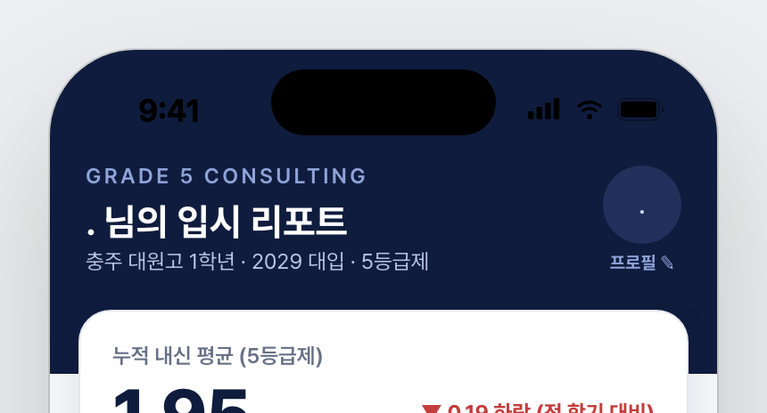
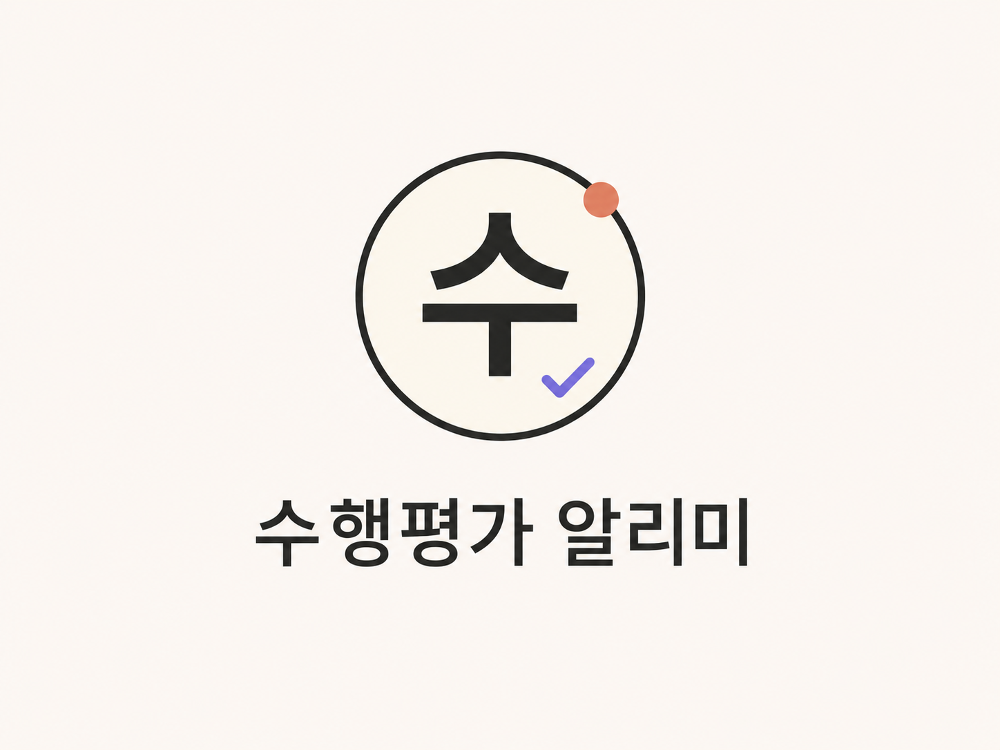
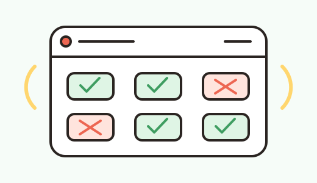

TEAM 1

Made by students, for everyone
학생 세 팀이 학교 구성원 모두를 위해 직접 기획하고 개발했어요.
필요한 서비스를 골라 바로 만나 보세요.
STUDENT BUILT
내신·입시 분석부터 수행평가 계획, 빈자리 확인까지.
학생들의 실제 불편에서 시작한 서비스예요.



A SMALL START, A BETTER SCHOOL
이곳의 서비스는 학생들의 관찰과 아이디어에서 시작됐어요.
작은 코드 한 줄이 더 즐거운 학교생활로 이어지길 바랍니다.